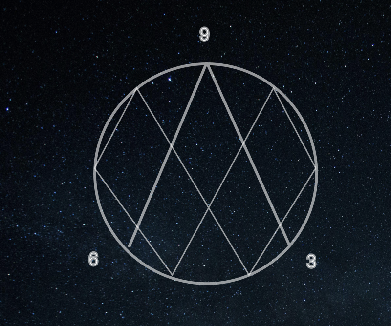
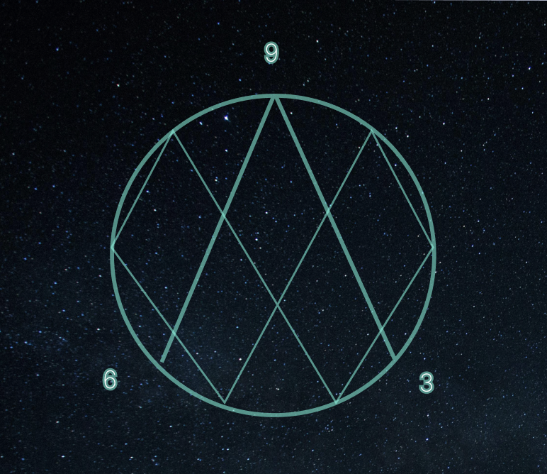
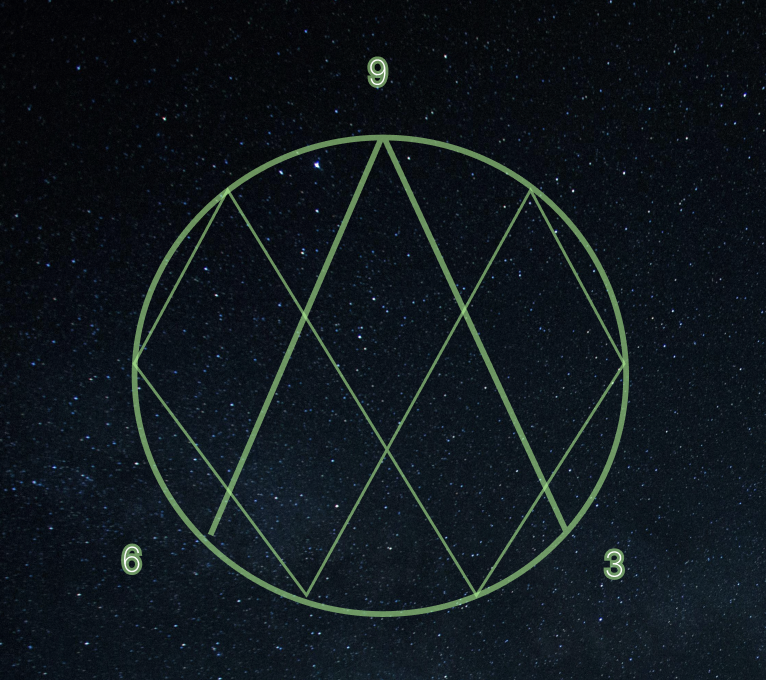

Wat is Vortex Math en Waarom is het Belangrijk?

In deze aflevering leggen wij de basis uit van Vortex Math. We nemen jullie mee door het getallensysteem van 1 tot 9, het terugkerende patroon, en de unieke eigenschappen van 3, 6 en 9. Wij vertellen ook...
Vortex Math in de Wetenschap: Van Natuurkunde tot Kosmologie

Hier duiken we dieper in de wetenschappelijke toepassingen van Vortex Math. Denk aan voorbeelden zoals energiestromen, het uitleggen van tornado's of zelfs de vorming van sterrenstelsels. Wij gaan uitleggen...
Van Wiskunde naar Muziek: De Harmonische Kracht van Vortex Math

In deze aflevering leggen wij uit hoe muziek en wiskunde met elkaar verbonden zijn, met een focus op de harmonieën, trillingen en frequenties. Wij zullen bespreken hoe Vortex Math wordt toegepast bij het analyseren...